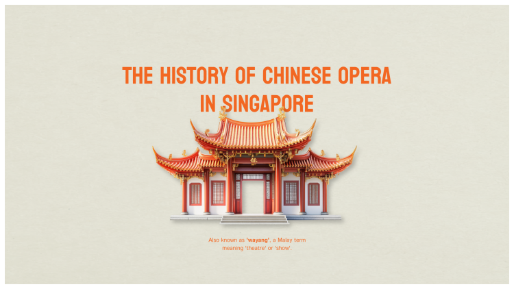

History Projects
Two interactive essays exploring culture, public health, identity, and the ways historical memory moves through place.

Chinese Street Opera
A Shorthand story on Chinese opera, identity, and cultural change in Singapore.
Masks, Mandates, and Modernity
An interactive essay on the history behind Japan's vaccine hesitancy.